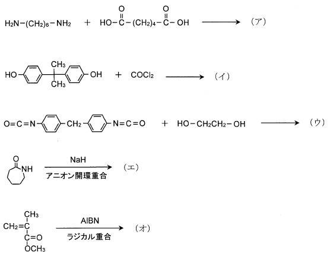
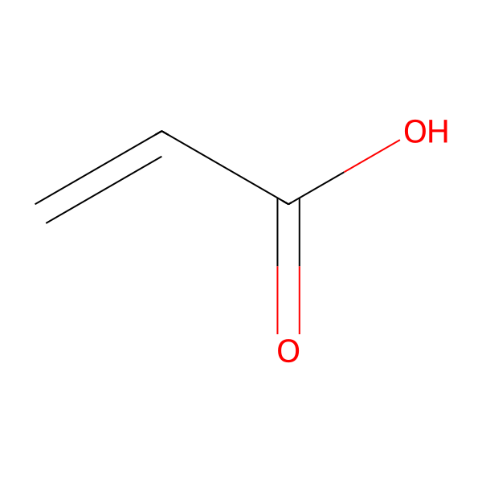
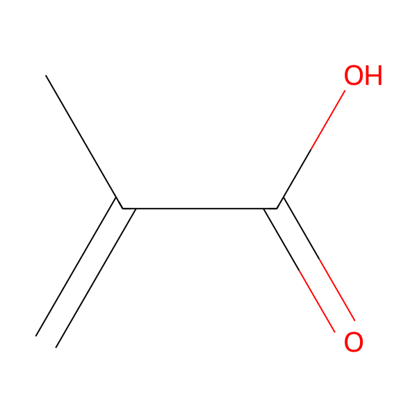

平成26年度 問15 高分子化学
次の反応で得られる（ア）～（オ）の高分子の一般名の組み合わせとして、最も適切なものはどれか。

①
ポリカーボネート / ポリウレタン / ナイロン6 / PMMA / ナイロン66
②
ナイロン66 / ポリカーボネート / ポリウレタン / ナイロン6 / PMMA
③
ポリウレタン / ナイロン6 / PMMA / ナイロン66 / ポリカーボネート
④
ナイロン6 / PMMA / ナイロン66 / ポリカーボネート / ポリウレタン
⑤
PMMA / ナイロン66 / ポリカーボネート / ポリウレタン / ナイロン6
正答
② ナイロン66 / ポリカーボネート / ポリウレタン / ナイロン6 / PMMA
正答は2番です。
アはナイロン66です。アジピン酸とヘキサメチレンジアミンを原料にして得られます。66はジカルボン酸とジアミンそれぞれの炭素数を表しています。
イはポリカーボネートです。多くはビスフェノールAとホスゲンを原料にして得られます。-O-(C=O)-O-の結合をカーボネート基と呼びます。
ウはポリウレタンです。ジイソシアネートとジオールとの反応により得られます。
エはナイロン6です。ε－カプロラクタムの開環重合により得られます。
オはポリメタクリル酸メチル（PMMA）です。構造が似た化合物にアクリル酸やメタクリル酸があります。原料となるメタクリル酸メチルはメタクリル酸のメチルエステルです。問題中で使用されているAIBNは代表的なラジカル重合開始剤です。

